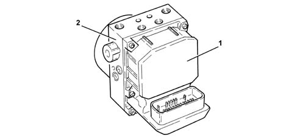
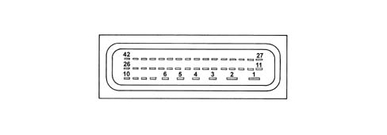
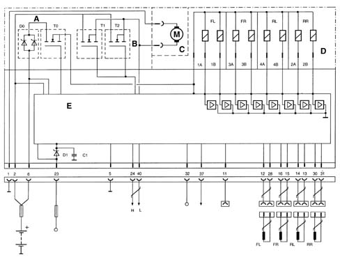
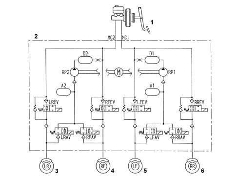
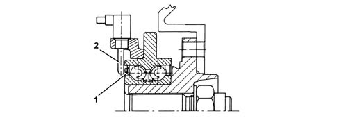
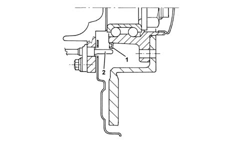
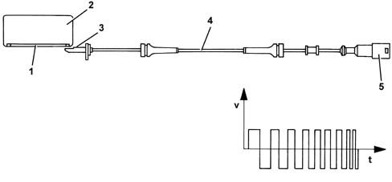

3340A abs check/adjustment devices
- Path
- Descriptions > 33 BRAKING SYSTEM > 3340 A(B.S. ANTI-LOCK BRAKING SYSTEM .) > 3340A abs check/adjustment devices
- Kind
- system description
- Applies to
- engines: 1.6 TS, 2.0 TS; all production periods
- Interactive page
- https://sloeber94.github.io/elrnDB-a147/en/#/3022484
Applies to: engines: 1.6 TS, 2.0 TS; all production periods
COMPONENT DESCRIPTION
Electrohydraulic unit
Composition
Structure
This consists of an electronic cotnrol unit (1) and an electro-hydraulic control unit (2).

Electronic control
Specifications
Function
The electronic control unit performs the following functions:
- downloading data from the wheel rpm sensors
- storing control parameters defined during the preparation of the vehicle
- storing the control software
- processes downloaded data
- controls the braking process
- detecting ABS component faults
- memorizing fault codes and activating the A.B.S. and EBD warning lights
- sending and receiving data via the C-CAN line
- transmitting and receiving data via the diagnostic connector
PIN OUT

1 - Power earth 2 - + 30 power supply 3 - N.C. 4 - N.C. 5 - Signal earth 6 - +30 power source 7 - N.C. 8 - N.C. 9 - N.C. 10 - N.C. 11 - Diagnostic line K 12 - Front left sensor signal 13 - Rear left sensor positive 14 - Rear left sensor signal 15 - Front right sensor positive 16 - Rear left sensor signal 17 - N.C. 18 - N.C. 19 - N.C. 20 - N.C. 21 - N.C. 22 - N.C. 23 - +15 power source 24 - CAN line 25 - N.C 26 - N.C. 27 - N.C. 28 - Front left sensor positive 29 - N.C. 30 - Rear right sensor positive 31 - Rear right sensor signal 32 - N.O. brake button 33 - N.C. 34 - N.C. 35 - N.C. 36 - N.C. 37 - Vehicle speed VSO (recovery) 38 - N.C. 39 - N.C. 40 - CAN L Line 41 - N.C.42 - N.C.
CIRCUIT DIAGRAM

A - Solenoid relay B - Pump motor C - Pump motor D - Valve unit E - Electronic control unit FL - Front left sensor FR - Front right sensor RL - Rear left sensor RR - Rear right sensor 1A-1B - Left front wheel solenoid 3A-3B - Right front wheel solenoid 4A-4B - Left rear wheel solenoid 2A-2B - Right rear wheel solenoid
Hydraulic control unit
Specifications
Function
Responsible for modulating the pressure of the fluid at the brake calipers via two solenoid valves with the following stages:
- brake fluid pressure increase
- brake fluid pressure maintenance
- brake fluid pressure discharge
Composition
Structure
The electro-hydraulic control unit consists of:
- eight two-way solenoid valves
- a dual circuit electric recovery pump
- two low pressure accumulators
- two high pressure accumulators
The letters indicating to which caliper and to which brake pump outlet they should be connected at stamped on the control unit at each outlet:
- RR = to the right rear brake (pipe marked with a light blue coloured band)
- LR = to the left rear brake (pipe marked with a green coloured band)
- RF = to the right front caliper (pipe marked with a yellow coloured band)
- LF = to the left front caliper (pipe marked with a white coloured band)
- MC1 = from the main circuit/flange side pump (pipe marked with a black or pink coloured band when the pipe polyammide resin is black)
- MC2 = from the secondary circuit/front pump (pipe marked with a brown coloured band).

1 - Brake servo pump 2 - Hydraulic control unit 3 Rear left wheel 4 - Front right wheel 5 - Front left wheel 6 - Rear right wheel
Active sensors
Specifications
Features of the system
The adoption of active sensors offers the following advantages:
- less sensitivity to the distance between the sensor and the magnetic ring (gap)
- it reduces sensitivity to electro-magnetic interference
- the active sensor is able to measure wheel rpm speeds down to zero (instead of 2.5 km/h with the passive sensor)
- it saves weight and size
- it simplifies the transmission couplings through the elimination of the phonic wheels.
Composition
Structure
The active sensors consist of two basic parts:
- a magnetic multi-polar codifier (1) integrated in the instrumented wheel hub bearing
- a magnetoresistive receiver (2) facing the codifier.
FRONT SENSOR

REAR SENSOR

Operation
Introduction
The operation of the sensor is based on the variation in the internal electrical resistance depending on the intensity and the direction of the lines of force of an external magnetic field (multipolar magnetic codifier) producing a variable square wave signal whose frequency depends on the rotation speed of the wheel, but whose range is constant.
The active sensor is thus a proximity sensor with its own electronic system. It is connected to the ABS control unit by means of an electrical supply cable and sends vehicle speed information to the control unit.
The phonic ring is a multipolar ring, an elastomer with a certain quantity of magnetic particles which are aligned by means of a special magnetization technique to produce different magnets with alternating north and south polarity around the circumference of the ring.

1 - Magnetised sealing ring 2 - Bearing 3 - Sensor head 4 - Active sensor 5 - Sealed connector